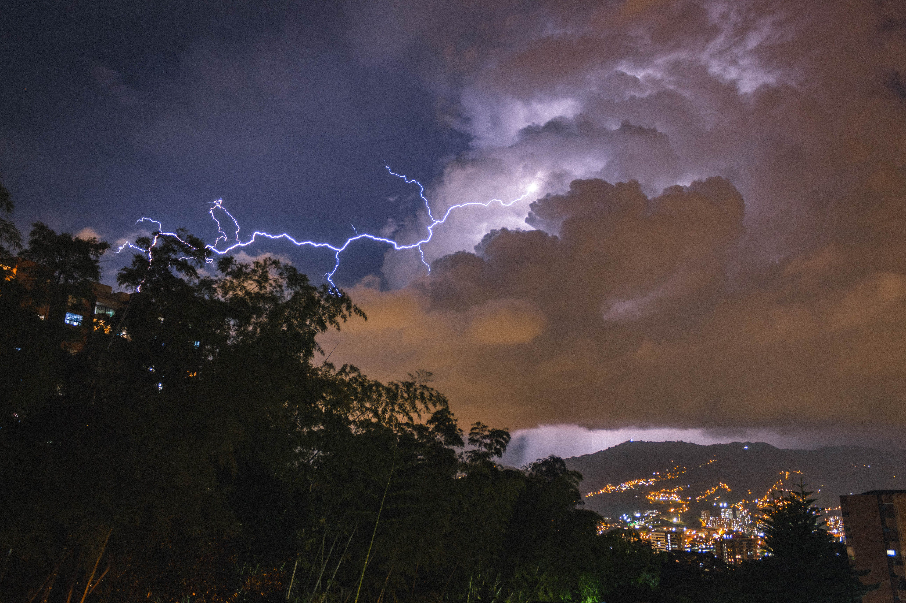

Un fenómeno extraordinario de la naturaleza y de la ciencia.
Un fenómeno cotidiano
Explicado desde la física, la química y la biología
La tormenta desde la física
Una tormenta es, ante todo, un fenómeno de transferencia de energía: calor, electricidad y movimiento se combinan en la atmósfera para producir viento, lluvia, rayos y truenos.
El aire cálido y húmedo asciende y se enfría, liberando energía al condensarse en nubes. El roce entre partículas de hielo y agua dentro de la nube separa cargas eléctricas, acumulando carga negativa en su base y positiva en su parte alta.
Cuando la diferencia de carga es suficiente, ocurre una descarga eléctrica: el rayo. Este calienta el aire a más de 30,000 °C en microsegundos, generando una onda expansiva que escuchamos como trueno, además de fuertes vientos y cambios bruscos de presión.
Comprender la física de la tormenta permite diseñar pararrayos, sistemas de alerta temprana y radares meteorológicos que anticipan su trayectoria e intensidad.
La tormenta desde la química
Una tormenta también es un laboratorio atmosférico: libera y transforma compuestos químicos en el aire, el suelo y las plantas que la rodean.
La energía de los rayos rompe moléculas estables de nitrógeno y oxígeno, que se recombinan formando óxidos de nitrógeno y ozono. El impacto de las gotas sobre el suelo libera geosmina, un compuesto producido por bacterias, junto con aceites acumulados en plantas y rocas.
De ahí surge el petricor, ese olor característico antes y durante la lluvia, y el aroma "metálico" asociado al ozono. Los óxidos de nitrógeno arrastrados por la lluvia terminan fertilizando el suelo de forma natural.
Estos procesos químicos se estudian para entender la calidad del aire, mejorar prácticas agrícolas y desarrollar sensores capaces de detectar tormentas por su firma química.
La tormenta desde la biología
Los seres vivos no solo sufren la tormenta: muchos la perciben antes de que llegue y ajustan su comportamiento o fisiología en consecuencia.
La caída de presión atmosférica, los infrasonidos y los cambios en el campo electromagnético que preceden a la tormenta son detectados por receptores sensoriales en animales, mientras que las plantas responden a la caída de humedad y presión cerrando parcialmente sus estomas.
Las aves vuelan más bajo y buscan refugio, otros animales se inquietan o se esconden, y las plantas reducen su pérdida de agua y liberan compuestos volátiles como parte de su respuesta al estrés ambiental.
Estas respuestas biológicas inspiran el uso de animales y plantas como bioindicadores naturales, complementando los sistemas de alerta temprana ante tormentas.
Comparaciones interactivas
Mueve los controles para entender mejor los conceptos físicos detrás de la tormenta.
Energía potencial vs. energía cinética
Antes de caer, una gota de lluvia en lo alto de la nube tiene energía potencial gravitatoria. Al caer, esa energía se transforma en energía cinética (movimiento).
Fuerza vs. masa (segunda ley de Newton)
El viento de una tormenta ejerce fuerza sobre los objetos. Según F = m·a, a mayor masa, se necesita más fuerza para producir la misma aceleración.
Infografías
Espacio reservado para infografías del proyecto (ciclo del agua, formación del rayo, cadena de reacciones químicas, etc.).
(próximamente)
(próximamente)
(próximamente)
Pon a prueba lo que aprendiste
Responde estas 3 preguntas sobre la tormenta vista desde la física, la química y la biología.
1. ¿Por qué vemos el rayo antes de escuchar el trueno?
2. ¿Qué compuesto producido por bacterias del suelo es responsable del característico olor a lluvia?
3. ¿Cómo es que algunos animales anticipan la llegada de una tormenta?
Mini-juego
Espacio reservado para un mini-juego interactivo adicional sobre la tormenta (próxima fase del proyecto).
Videos y podcast
Estos espacios se completarán cuando el material esté grabado.
Videos
Espacio reservado para video 1
(próximamente)
Espacio reservado para video 2
(próximamente)
Podcast
Episodio 1: Física del rayo
(próximamente)
Episodio 2: Química del olor a lluvia
(próximamente)
Episodio 3: Biología de la anticipación animal y vegetal
(próximamente)
El equipo detrás del proyecto

Diego de Jesús Arias
Autor de este proyecto de divulgación científica, enfocado en explicar un fenómeno cotidiano —la tormenta— desde la perspectiva de la física, la química y la biología.
Proyecto individual realizado como parte de una evaluación escolar de divulgación científica.
La ciencia no conoce fronteras entre materias
La tormenta es mucho más que un fenómeno meteorológico: es un punto de encuentro entre disciplinas científicas. La física explica la electricidad, el sonido y el movimiento del aire; la química explica los olores y reacciones atmosféricas; la biología explica cómo los seres vivos perciben y responden a estos cambios.
Comprender un mismo fenómeno desde distintas ciencias nos ayuda a apreciar la complejidad y la interconexión del mundo natural, y demuestra que la curiosidad científica no conoce fronteras entre materias.